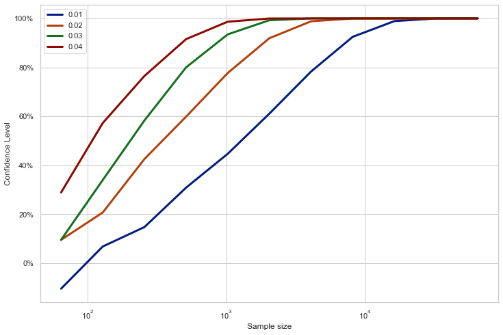

%matplotlib inlineimport matplotlib.pyplot as pltimport seaborn# Set seaborn aesthetic parameters to defaultsseaborn.set()seaborn.set_style('whitegrid')seaborn.set_palette("dark")import mathimport numpy as npfrom scipy.special import combnp.random.seed(42)
You walked into a casino, there is a game of tossing coins. You don’t know whether the coin is biased or fair. But, you can observe the game and keep the stats. How many tosses would you observe to measure the probability of the coin?
Though it is not possible to exactly determine the underlying probability distribution of the coin, we can measure in high confidence, if we observe enough tosses.
The probability distribution of a coin toss is known as Bernoulli distribution parameterized with p, the probability of heads. There is no way we can directly measure this. Instead, we count the heads, \(k\), and divide it into total number of tosses, \(n\). How do we know that this is a good way of measuring p? Well, the probability distribution of number of heads is Binomial distribution, parameterized with p and n. And the expectation of Bernoulli distribution is \(np\). Therefore, if we count heads and divide it by total number of tosses, we have an estimate of \(p\).
Though there are some deviations, it seem’s like error decreases as the sample size grows. But, how to know where to stop? Also, how confident are we about our measurements considering the deviations in them? Fortunately, with the help of probability theory, we can determine the number of samples required to reach the desired confidence level for our estimate.
Confidence Intervals
We want to ensure that our estimate is close to true value of \(p\). In other words, we want the probability of the event that our estimate is within a small interval around \(p\) as high as possible. This probability, a.k.a. confidence level, can be formulated as such,
\[
P[k > n (p + \text{interval})] = P[n-k < n - n (p + \text{interval})] = P[n-k < n (1 - p - \text{interval}))]
\]
\[
\text{confidence level} = 1 - (P[n-k < n (1 - p - \text{interval}))] + P[k < n (p - \text{interval})]) \\
= 1 - ( F_{n,1-p}[n(1 - p - \text{interval})] + F_{n,p}[n(p - \text{interval})] ) \\
F: \text{Cumulative Distribution Function}
\]
So, we need to calculate cumulative mass function (CMF) of Binomial distribution parameterized with \(p\) and \(n\). But, we don’t know p. It turns out that the above expression takes it minimum value at \(p=0.5\). Therefore, we can find a lower bound on confidence level with \(p=0.5\). The formula for confidence level becomes,
Let’s define PMF by using scipy.special.comb for combination function.
from scipy.special import comb
def binomial_pmf_naive(n, p, k):return comb(n, k) * p ** k * (1-p)**(n-k)
binomial_pmf_naive(2, 0.5, 0)
0.25
binomial_pmf_naive(100, .5, 50)
0.07958923738717873
binomial_pmf_naive(2000, .5, 1000)
inf
As you see, for big n values, Scipy’s comb method overflows since it is out of bounds of Python’s floating point number. To overcome this, we can use an approximation for log of combination function.
OK, the approximation seems pretty close. Now, we can define PMF.
def binomial_pmf(n, p, k, eps=1e-32):ifisinstance(p, (float, int)): p = [p]ifisinstance(k, (float, int)): k = [k] p = np.array(p)[:, None] k = np.array(k)[None, :]return np.exp(log_comb_approximate(n, k) + k * np.log(p + eps) + (n - k) * np.log(1- p + eps))
Code
n =2000p =0.4k = np.arange(n+1)pmf = binomial_pmf(n, p, k)plt.figure(figsize=(12, 6))plt.plot(k, pmf.T)plt.xlabel("Number of heads")plt.ylabel("Probability Mass Function")plt.title(f"Binomial Distribution with p={p}");
Let’s sanity-check approximated PMF.
print(pmf.sum())
1.0001320546143024
CMF is just cumulative sum of PMF.
Code
cmf = pmf.cumsum(-1)plt.figure(figsize=(12, 6))plt.plot(k, cmf.T)plt.xlabel("Number of heads")plt.ylabel("Cumulative Mass Function")plt.title(f"Binomial Distribution with p={p}");
Now, let’s define a function that calculates confidence level for given sample size and interval.
It gets better, but we cannot keep trying all values one by one. Let’s plot confidence level against different sample sizes.
Code
import matplotlib.ticker as mtickns = np.power(2, np.arange(6, 18)) # sample sizesconfs = np.array([compute_confidence(n, interval) for n in ns]).squeeze()plt.figure(figsize=(12, 8))plt.semilogx(ns, confs*100)plt.ylabel("Confidence Level")plt.xlabel('Sample size')plt.title(f"interval={interval}")plt.gca().yaxis.set_major_formatter(mtick.PercentFormatter())
We need more than 10,000 samples to have confident estimate of \(p\).
Let’s see how it changes with different interval values.
Code
intervals = np.arange(1, 5) /100ns = np.power(2, np.arange(6, 17)) # sample sizesconfs = np.array([[compute_confidence(n, interval) for n in ns] for interval in intervals]).squeeze()plt.figure(figsize=(12, 8))plt.semilogx(ns, confs.T*100, lw=3)plt.ylabel("Confidence Level")plt.xlabel('Sample size')plt.gca().yaxis.set_major_formatter(mtick.PercentFormatter())plt.legend([f'{interval}'for interval in intervals]);

As interval gets tighter, we need more samples for a confidence level. Now, let’s write a function that calculates required sample size for given interval and confidence level.
Code
plt.figure(figsize=(12, 8))plt.semilogy(ns, (1- confs.T)*100, lw=3)plt.ylabel("Error Level")plt.xlabel('Sample size')plt.legend([f'{interval}'for interval in intervals]);
The error (\(1 - \text{confidence level}\)) gets exponentially smaller as the sample size increases. Hence, we fit a 1D spline linear interpolator on logarithm of error with respect to sample size.
from scipy.interpolate import interp1ddef find_sample_size(confidence, interval, p=1/2, eps=1e-32):assert interval >=.01 ns = np.power(2, np.arange(1, 18)) confs = np.array([compute_confidence(n, interval) for n in ns]).squeeze() confs = np.clip(confs, 0, 1) inconfs =1- confs f = interp1d(np.log(inconfs + eps), ns, kind='slinear')return f(np.log(1-confidence))
Let’s check for various confidence levels.
Min sample size for conf=0.95, interval=0.04 is 659
Min sample size for conf=0.95, interval=0.01 is 9943
Min sample size for conf=0.999999, interval=0.01 is 60058
Conclusion
Let’s say we tossed the coin for 659 times and the number of heads is 309. So, our estimate for \(p\) is 0.47. Does this mean \(p\) is likely to be in 0.47 ± 0.04? No, quite the opposite. The probability of heads is not probabilistic, it is a characteristic of the coin. We are trying to measure it. On the contrary, our estimate is probabilistic as we take finite number of samples to derive it. Hence, we can only talk about the likelihood of the estimate being close to true value. Specifically, the confidence interval states that there is 95% chance that the estimate is within ±4% interval of true value.
This method can be used to determine number of samples required for polls, if we assume that each individual’s answers are mutually independent. The good news is the sample size required does not depend on population size and confidence level gets exponentially better w.r.t. sample size.
References
Eric Lehman, F. Thomson Leighton, Albert R. Meyer. Mathematics for Computer Science. Lecture Notes, available at https://ocw.mit.edu/courses/electrical-engineering-and-computer-science/6-042j-mathematics-for-computer-science-fall-2010/readings/MIT6_042JF10_notes.pdf, 2010.